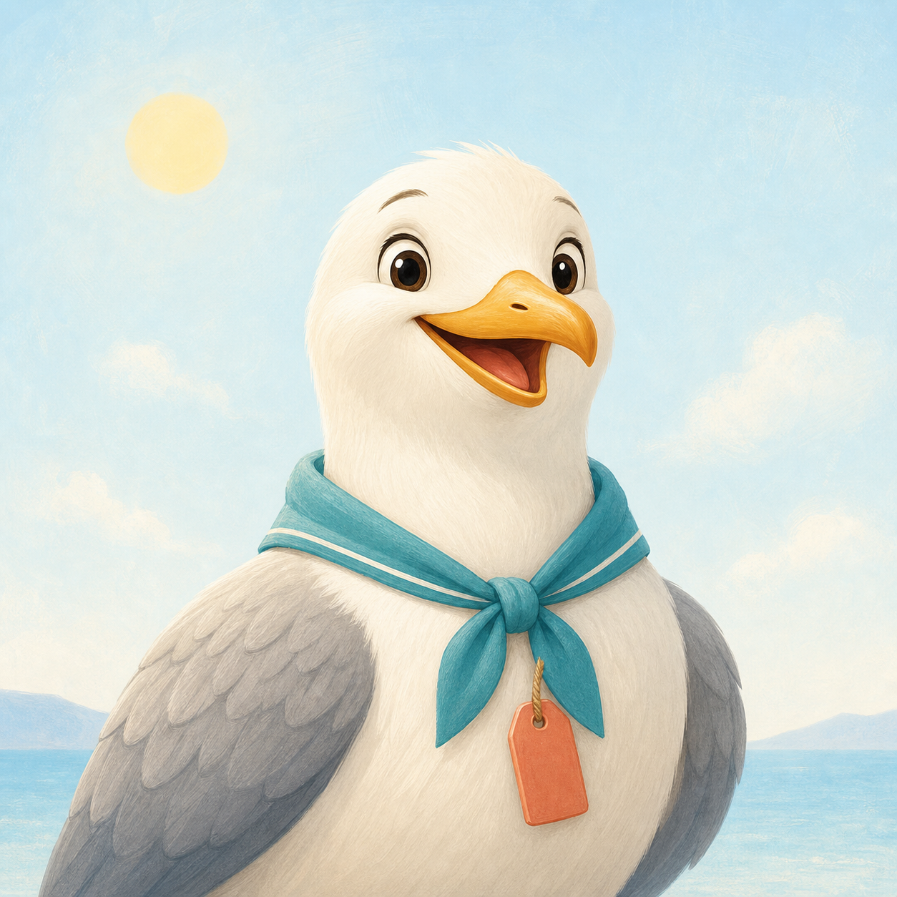

Malé prázdninové dobrodružstvo
Nájdi ukryté predmety
Pozri sa do obrázka a nájdi tri veselé veci.
Pre malých objaviteľov od 2 rokov. Bez registrácie a bez čítania.

Dobrodružstvo 1 z 3
Slnečná pláž
Nájdi
0/3
Ťukni na jeden z ukrytých predmetov.
Výborne!
Všetko je nájdené.
Čaká ťa ďalšia krásna scéna.
Medaila pre teba
Malý objaviteľ Stredomoria
Výborne! Našiel si všetky ukryté predmety!